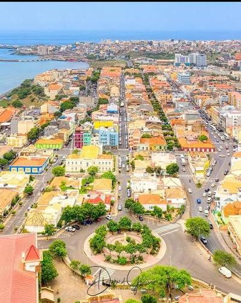

Um ditado sobre a minha terra
"Un mon so ka ta laba"

A cidade Praia é reconhecida pela UNESCO .
Cidade da Praia é a Capital de Cabo Verde, um país insular da África Ocidental. Visita o site oficial da Câmera Municipal da Praia.
Praia é conhecida pelas suas beautiful beaches, cultura, e a sua historia.
Se visitantes viessem à minha cidade, eu lhes mostraria:
Eu também os convidaria a experimentar nossa comida tradicional e a apreciar a música cabo-verdiana.
| Monumento | Construção/Século | Estilo | Classificação |
|---|---|---|---|
| Forte Real de São Filipe | Séc. XVI | Militar | Património Mundial da UNESCO |
| Pelourinho da Cidade Velha | Séc. XVI | Manuelino | Património Mundial da UNESCO |
| Sé Catedral da Cidade Velha | Séc. XVI | Gótico/Renascentista | Património Mundial da UNESCO |
"Un mon so ka ta laba"